The Cressona High School football team, from the 1935 Maroon and White. Allen is number 3, sixth from the left in the back row. Coach Stauffer stands at the right in a suit.
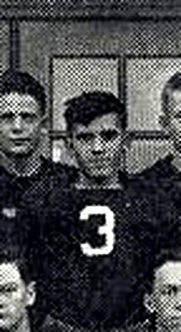
Number 3, enlarged. He was sixteen when this season was played.
Four miles lay between Cressona and the Pottsville armory — too little for the national map to keep them apart. Schuylkill Haven, whose weekly paper posted The Call to him in Australia and printed his letter back, is a mile the other way.
How he left: Cressona to the Golden Gate, 1936 – January 1942. Coastlines from Natural Earth (public domain), projected on an Albers conic equal-area and generalised for this document.This drawing, set out in words
Cressona, in Schuylkill County, where he was born on 9 September 1918. The county is drawn separately below, because Cressona, Pottsville and Schuylkill Haven fall within a pen-width at this scale.
Camp Pendleton, Virginia, from 24 September 1940, with the regiment.
Camp Stewart, Georgia, from 22 February 1941.
Savannah, forty miles away, where he left the Guard at his own request and enlisted in the Air Corps on 10 April 1941.
Scott Field, Illinois, the Air Corps radio school, which he left on 27 October 1941.
Pope Field, North Carolina, for the Carolina manoeuvres of November 1941.
Augusta, Georgia, in December 1941, and a one-day errand to Palm Beach.
The troop train west, the one leg whose means is recorded: five days through St. Louis, McCook and Denver to Oakland, 19 to 24 January 1942.
The Golden Gate, 31 January 1942 — the day his foreign service begins, by the Commonwealth's reckoning and the Army's.
A filled disc marks a place he is documented to have been. An open square marks a place documented for his unit rather than for him. An open square with a diagonal tick marks his own squadron. A dashed circle marks a place that is inferred rather than recorded.
A brass ring crossed by a bar marks a place he never stood on — a target, or somewhere his group went without him. Each carries the words HE WAS NOT THERE.
A solid line is a journey whose means of travel is recorded. A dashed line is a move that is documented while the means is not. A dotted line rests on his own account alone.
No plate here carries a distance worked out by arithmetic. His own “about 12,000 miles” already stands in these pages against a measured 9,500 to 10,200, and a third figure, quietly calculated, would be a number nobody ever measured.
Before the Army Air Force there were four years in the Pennsylvania National Guard — weekend drills at the armory and summer encampments in the field, from 1936 to 1940. This was Allen's first soldiering.
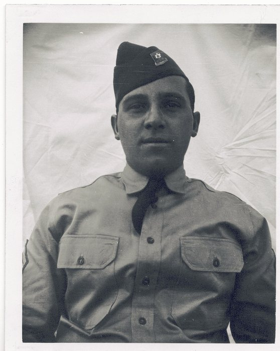
Allen, in a garrison cap, close portrait.
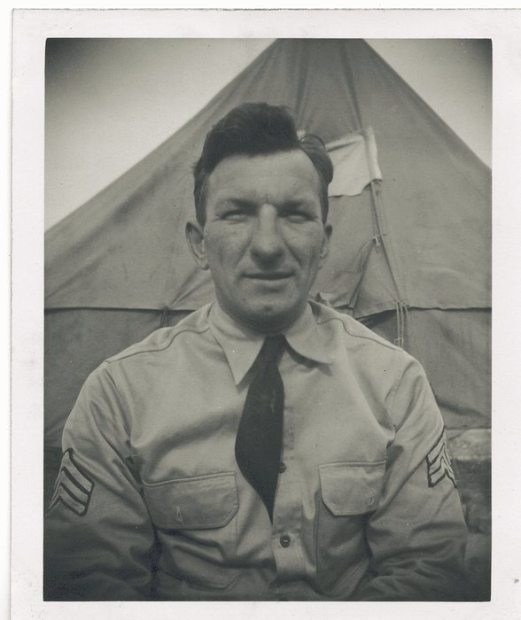
A sergeant, chevrons visible, stands before a tent.
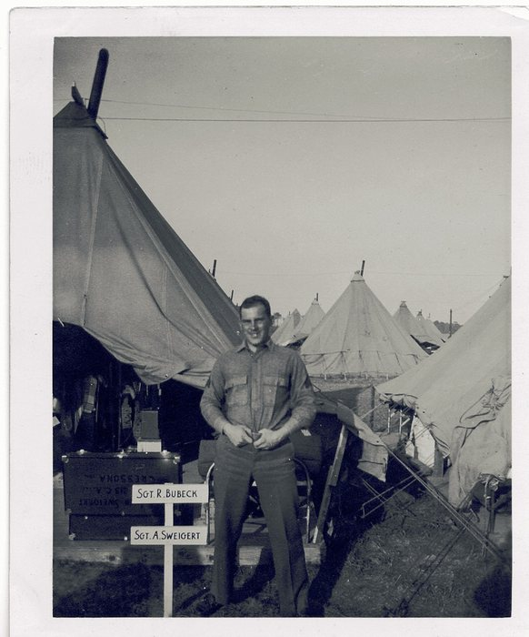
A hand-lettered camp sign reads “SGT. R. BUBECK” and “SGT. A. SWEIGERT” — Allen's own name, in camp.
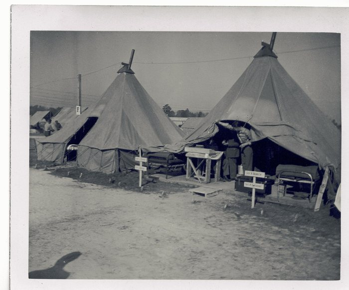
A company street of tents, one marked with the letter “F” for Battery F.
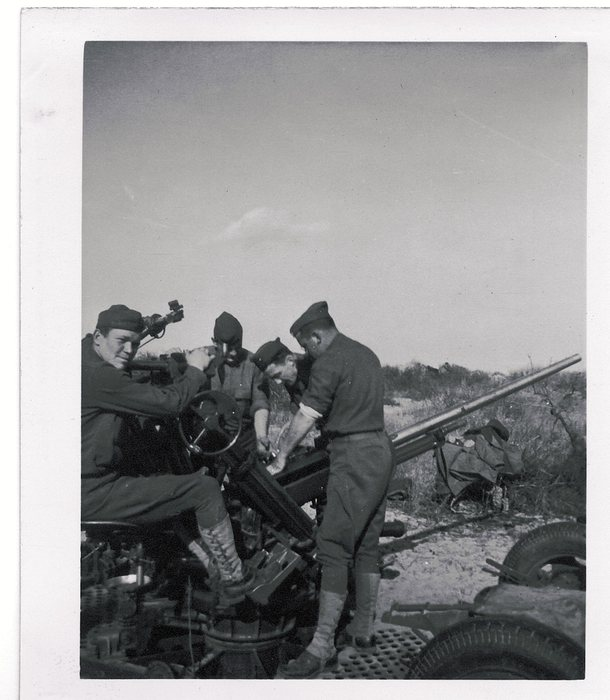
Four soldiers operate a mobile anti-aircraft gun mount in the field.
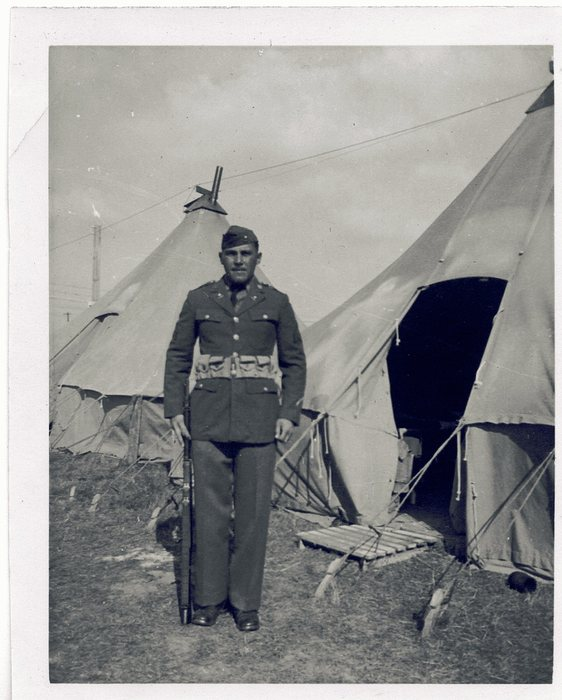
Allen stands at attention in full dress uniform, rifle at his side.
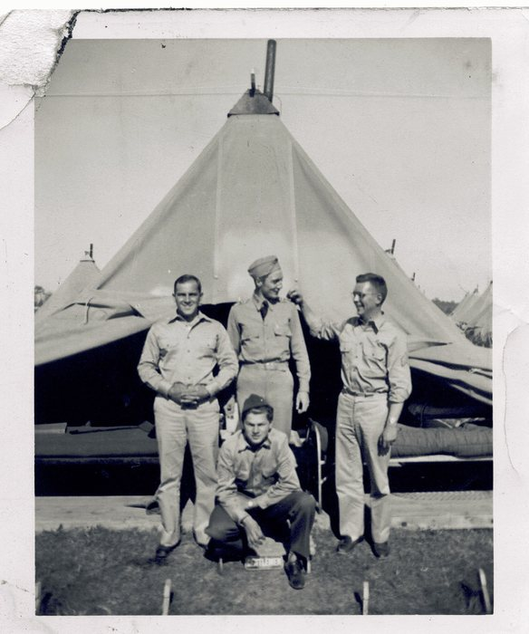
Four soldiers, one crouching, smile for a group photo among the tents.
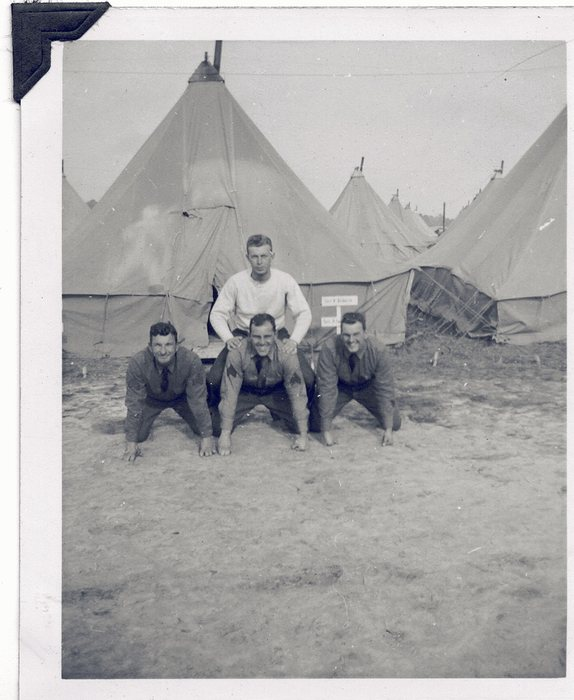
Soldiers clown around camp, one balancing on the backs of three others.
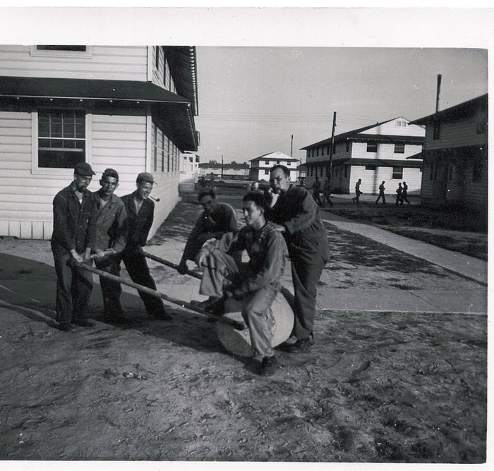
Soldiers joke around a hand cart on a barracks street.
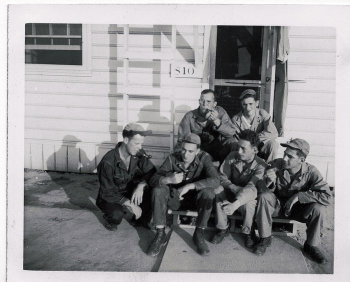
Six soldiers, several smoking pipes, relax on the steps of barracks 810.
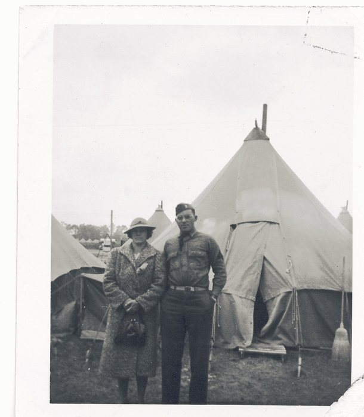
Allen with an older woman — likely his mother, visiting camp.
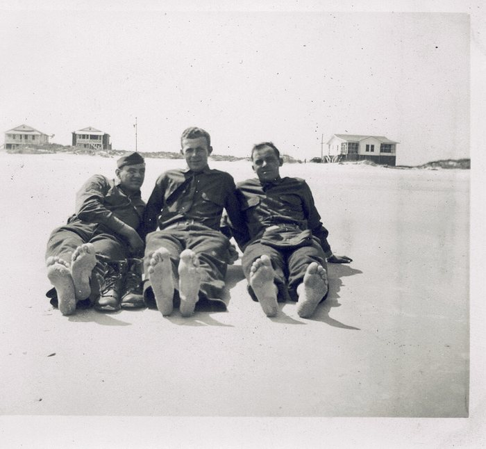
Allen and two other soldiers relax on a beach, wood-frame cottages behind them.
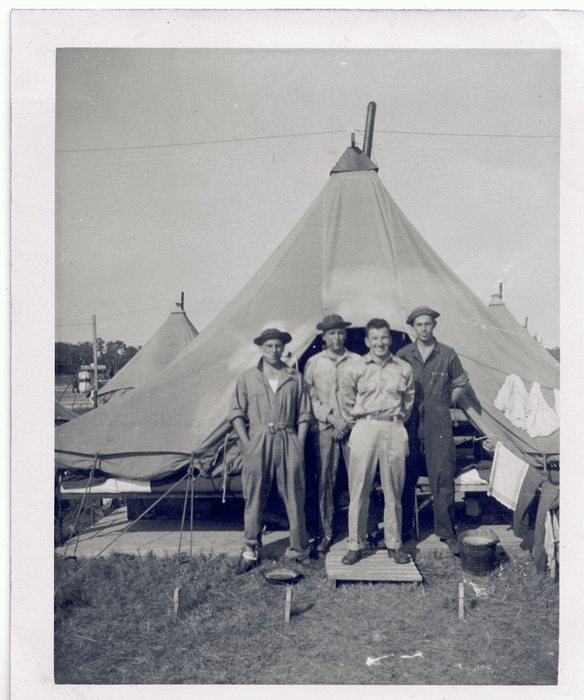
Allen is one of four men outside a pyramidal tent with a stovepipe through its peak: two in one-piece work coveralls and soft hats, one in shirt and trousers with a pipe in his mouth, and one bare-headed in shirtsleeves standing on a wooden duckboard. Folding cots, hanging towels, a pan and a bucket stand about the tent, with more tents and a pole line beyond.
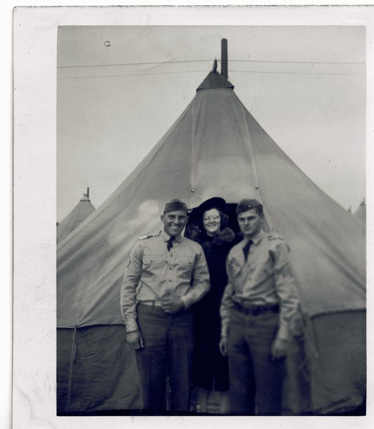
Allen is one of two servicemen in khaki shirts and ties with garrison caps standing either side of a woman in a dark fur-collared coat and hat at the entrance of a pyramidal tent, the stovepipe rising behind them and further tents on both sides.
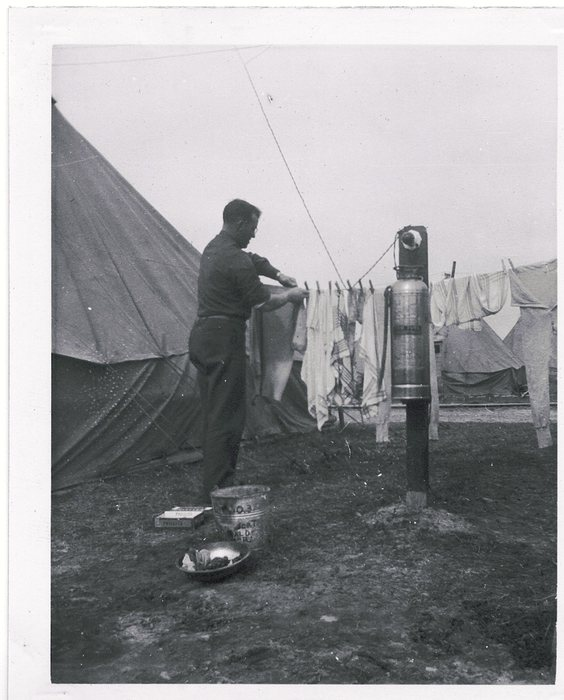
Allen, in wool shirt and trousers, pegs washing to a line strung between tents, a soda-acid fire extinguisher hanging from a board on a post beside him. On the ground are a washbasin, a flat cardboard box, and a galvanized bucket stencilled “NO. 3” and hand-lettered below with “SGT” and a name ending “...ALD”.
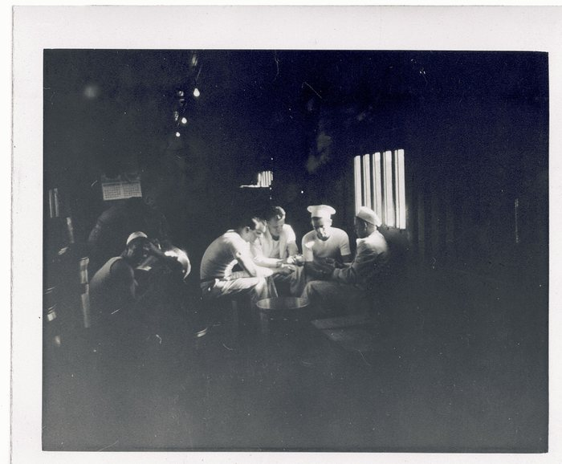
Six men in a dark room, several in undershirts and light fatigue caps, their hands gathered at the centre of the group and a metal basin on the table in front of them. Bare bulbs hang from the ceiling, a printed sheet is tacked to the wall at the left, and the only light comes through a slatted window at the right.
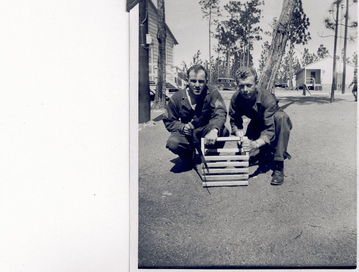
Allen at the left, with another man in fatigue coveralls, crouching on an unpaved camp road holding up a home-made crate of light wooden slats fitted with a carrying handle, something dark visible inside it; Allen wears chevrons on his sleeve and each of them holds a tool. Wooden camp buildings, tall pines, a parked 1930s sedan and a distant figure near the far building fill the background.
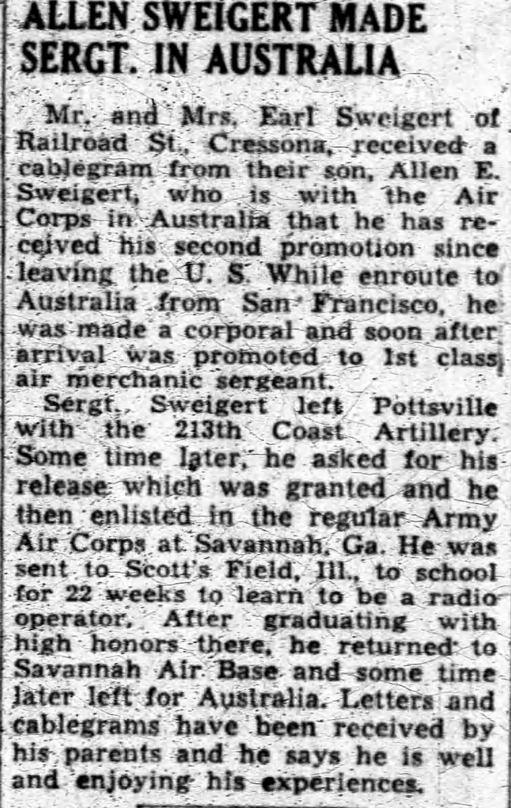
The same news as the Pottsville Republican had set it the day before, on Thursday 28 May 1942. The wordings differ throughout, and on one point — how long he was back at Savannah before sailing — the two papers disagree outright.
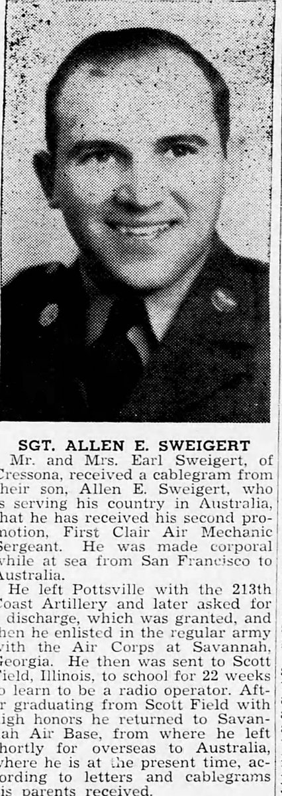
The Call of Schuylkill Haven, Friday 29 May 1942, front page — the news of his promotion, sent home by cablegram from Australia. The notice sets out his whole route into the Air Corps, and it is the source for the detail that the discharge from the Guard was granted at his own request.
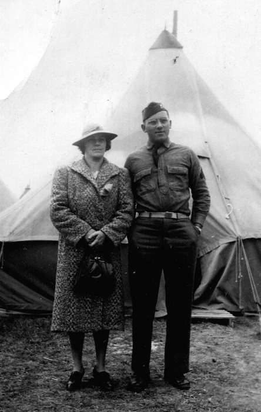
Allen’s mother, in a tweed overcoat, light brimmed hat and dark buckled shoes with a handbag held in both hands, standing beside him at the Guard camp — he is in wool service shirt, tie and garrison cap with a cap insignia, wearing wire-rimmed spectacles. Behind them are pyramidal tents, one with a stovepipe through the roof, and a wooden platform laid at the tent’s edge.
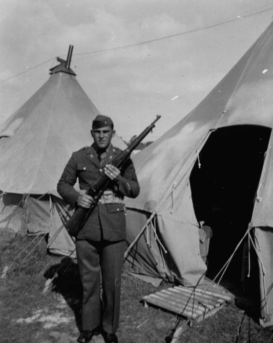
Allen in a wool service coat with collar disks, shirt and tie and a garrison cap, holding a .30-calibre bolt-action rifle across his chest. He stands between pyramidal tents, one with its flap open and a wooden duckboard laid at the entrance.
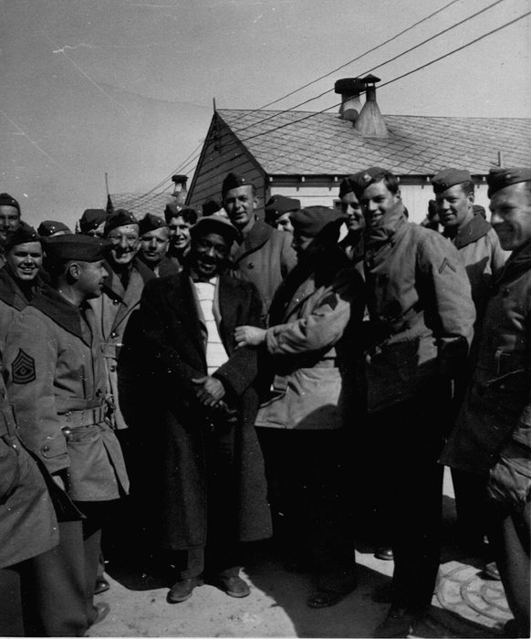
A crowd of soldiers in wool service coats and garrison caps presses in around a Black civilian in a long overcoat, striped sweater and soft cap, who is laughing as he shakes hands with one of them. Wooden barracks with shingled roofs and metal roof ventilators stand behind; a first sergeant’s chevrons show on the sleeve at the left of the frame.
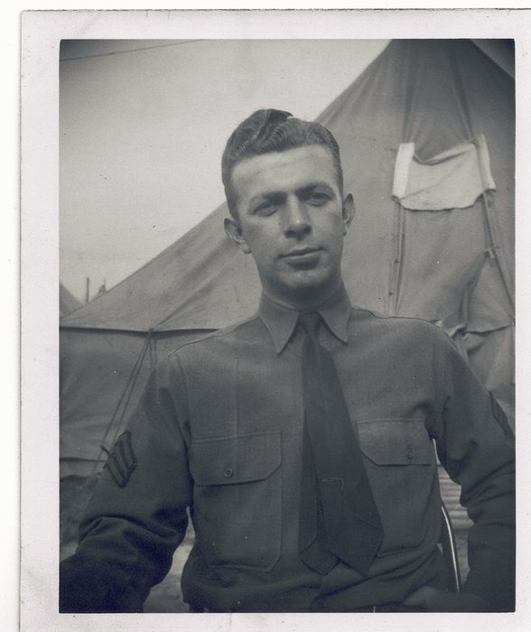
Waist-up portrait of a sergeant in a wool service shirt and tie, three chevrons on his sleeve, seated in front of a pyramidal tent with a pale towel hung over its front.
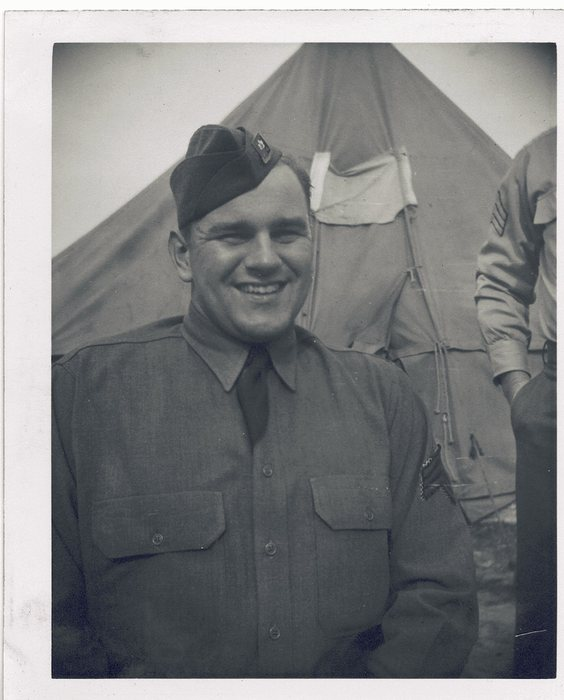
A grinning serviceman in a wool shirt and tie, a small metal insignia pinned to the curtain of his garrison cap, photographed in front of a pyramidal tent; a second man stands at the right edge of the frame with chevrons on his sleeve.
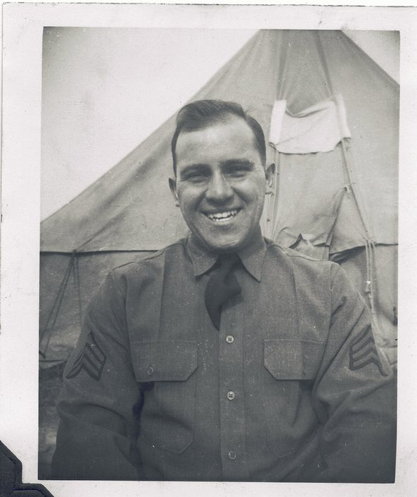
Allen, broadly smiling, in a wool service shirt and tie with three-chevron sergeant’s stripes on both sleeves, in front of a pyramidal tent.
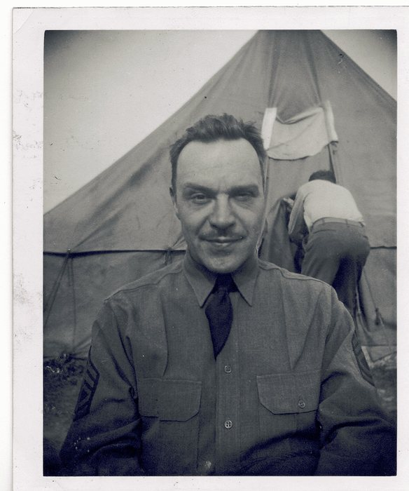
A moustached serviceman in a wool shirt and tie, chevrons just visible at the cut edge of his sleeve, looks into the camera while behind him another man in a light shirt works at the open flap of a pyramidal tent.
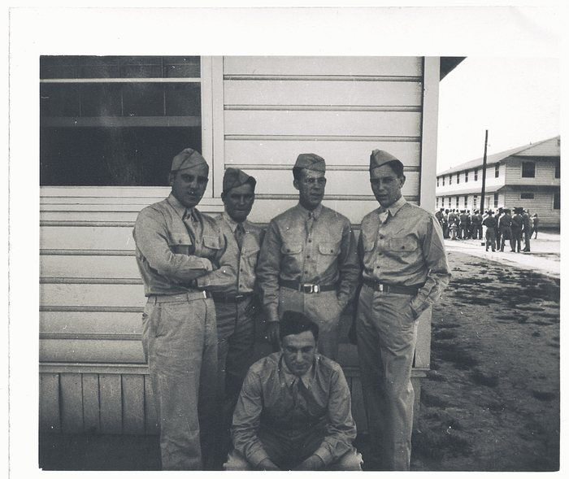
Five men in cotton service shirts, ties and garrison caps at the corner of a wooden barracks building, Allen at the left — four standing and one seated on the ground in front of them. A second two-storey barracks stands beyond, with a group of roughly twenty more men gathered along the road behind.
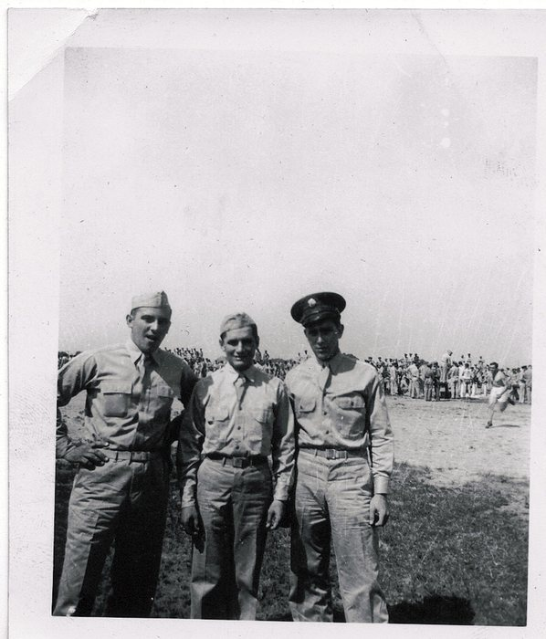
Three men in cotton service shirts and ties in an open field, Allen at the left: two in garrison caps and the third in a visored service cap with a cap badge. A long line of men is massed across the background, and at the right a man in shorts and a light shirt runs past.
Six men pose among pyramidal tents pitched in a pine wood, four standing — one of them stooped forward with his head down — and two crouching in front. Five wear work fatigues and soft caps; the man at the right is bareheaded in a dark sweater with a light scarf at his neck. A rough timber rack and table stand at the left, a timber rail runs across the group, and wires are strung overhead. The back reads “Pope Field / Maneuvers / Nov. 1941”.